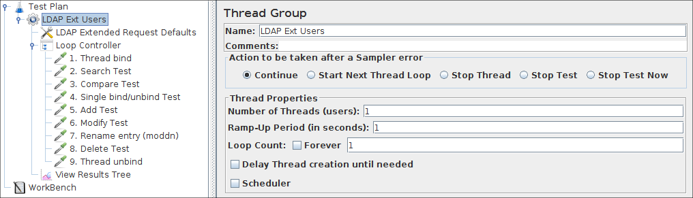
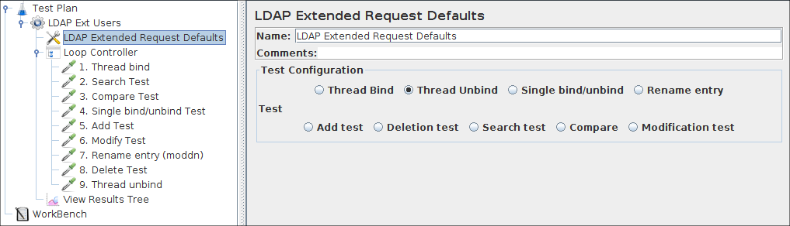
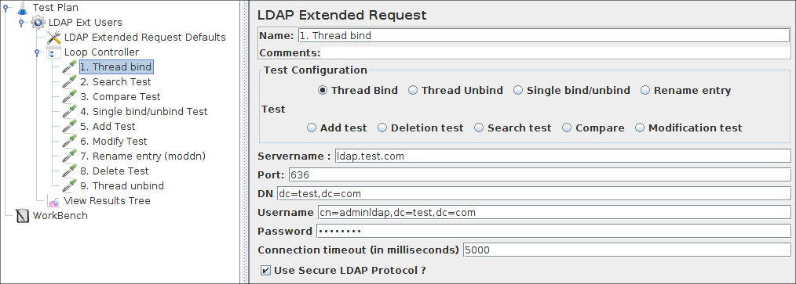
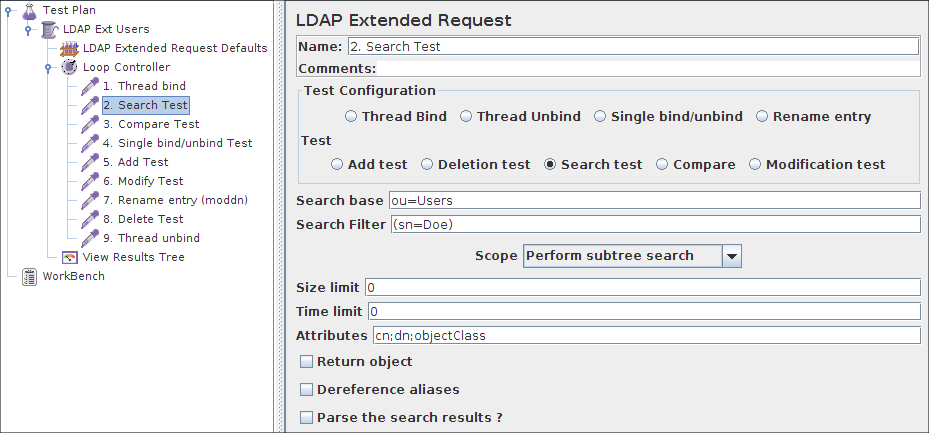
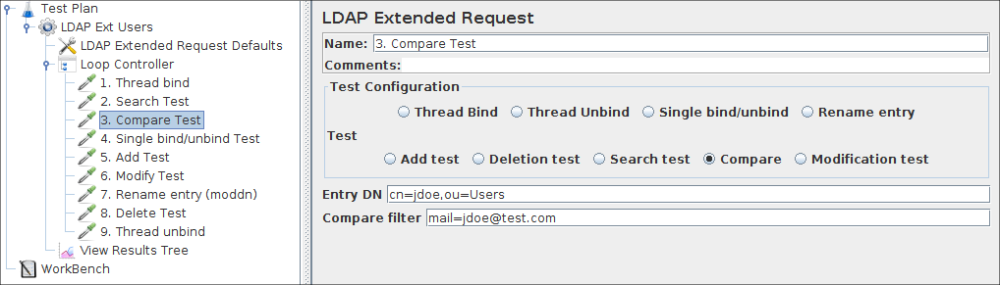
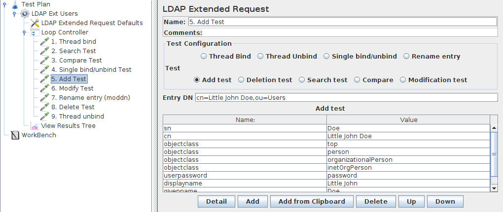
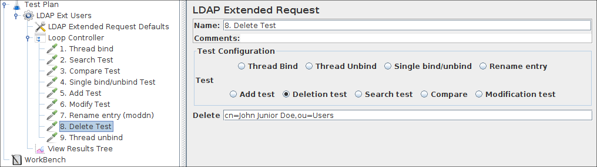
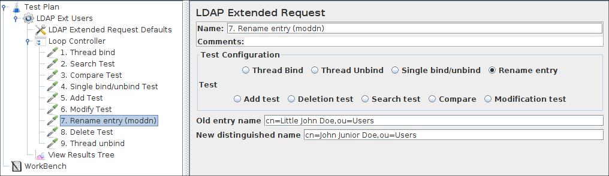
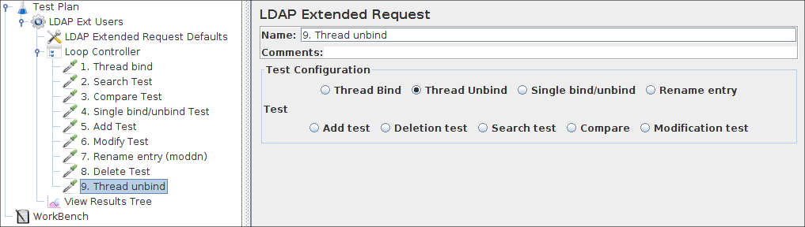

|
About
Download
Documentation
Tutorials (PDF format)
Community
Foundation
|
|
9b. Building an Extended LDAP Test Plan¶
|
In this section, you will learn how to create a basic Test Plan to test an LDAP
server.
As the Extended LDAP Sampler is highly configurable, this also means that it takes
some time to build a correct testplan. You can however tune it exactly up to your
needs.
You will create four users that send requests for four tests on the LDAP server.Also, you will tell
the users to run their tests twice. So, the total number of requests is (4 users) x (4 requests) x
repeat 2 times) = 32 LDAP requests. To construct the Test Plan, you will use the following elements:
Thread Group
,
Adding LDAP Extended Request Defaults
,
Adding LDAP Requests
, and
Adding a Listener to View/Store the Test Results
This example assumes that the LDAP Server is installed in your Local machine.
For the less experienced LDAP users, I build a
small
LDAP tutorial
which shortly explains
the several LDAP operations that can be used in building a complex testplan.
Take care when using LDAP special characters in the distinghuished name, in that case (eg, you want to use a + sign in a
distinghuished name) you need to escape the character by adding an "\" sign before that character.
extra exeption: if you want to add a \ character in a distinguished name (in an add or rename operation), you need to use 4 backslashes.
examples:
cn=dolf\+smits to add/search an entry with the name like cn=dolf+smits
cn=dolf \\ smits to search an entry with the name cn=dolf \ smits
cn=c:\\\\log.txt to add an entry with a name like cn=c:\log.txt
|
9b.1 Adding Users
¶
|
The first step you want to do with every JMeter Test Plan is to add a Thread Group element.
The Thread Group tells JMeter the number of users you want to simulate, how often the users should send
requests, and the how many requests they should send.
Go ahead and add the ThreadGroup element by first selecting the Test Plan, clicking your
right mouse button to get the Add menu, and then select Add-->ThreadGroup. You should now see the
Thread Group element under Test Plan. If you do not see the element, then "expand" the Test Plan tree by
clicking on the Test Plan element.

Figure 9b.1. Thread Group with Default Values
|
|
|
|
9b.2 Adding LDAP Extended Request Defaults
¶
|
Begin by selecting the Thread Group element. Click your right mouse button
to get the Add menu, and then select Add --> Config Element -->LDAP Extended Request Defaults. Then,
select this new element to view its Control Panel.
Like most JMeter elements, the LDAP Extended Request Defaults Control Panel has a name
field that you can modify. In this example, leave this field with the default value.

Figure 9b.2 LDAP Defaults for our Test Plan
|
For each of the different operations, some default values can be filled in.
In All cases, when a default is filled in, this is used for the LDAP extended requests.
For each requst, you can override the defaults by filling in the values in the LDAP extended request sampler.
When no valueis entered which is necesarry for a test, the test will fail in an unpredictable way!
|
|
|
9b.3 Adding LDAP Requests
¶
|
In our Test Plan, we want to use all 8 LDAP requests.
-
Thread bind
-
Search Test
-
Compare Test
-
Single bind/unbind Test
-
Add Test
-
Modify Test
-
Delete Test
-
Rename entry (moddn)
-
Thread unbind
JMeter sends requests in the order that you add them to the tree.
Adding a requests always start by:
Adding the LDAP Extended Request to the Thread Group element (Add -->
Sampler --> LDAP Ext Request). Then, select the LDAP Ext Request element in the tree
and edit the following properties.
|
9b.3.1 Adding a Thread bind Request
¶
|
-
Select the "Thread bind" button.
-
enter the hostname value from the LDAP server in the Servername field
-
Enter the portnumber from the LDAP server (389) in the port field
-
(optional) enter the baseDN in the DN field, this baseDN will be used as thestarting point for searches, add, deletes etc.
take care that this must be the uppermost shared level for all your request, eg When all information is stored under ou=people, dc=siemens, dc=com, you can use this value in the basedn.
You cannot search or rename anymore in the subtree ou=users,dc=siemens,dc=com!
If you need to search or rename objects in both subtrees, use the common denominator (dc=siemens,dc=com) as the baseDN.
-
(Optional) enter the distinghuised name from the user you want to use for authentication.
When this field is kept empty, an anonymous bind will be established.
-
(optional) Enter the password for the user you want to authenticate with, an empty password will also lead to an anonymous bind.

Figure 9b.3.1. Thread Bind example
|
|
|
|
9b.3.2 Adding a search Request
¶
|
-
Select the "Search Test" button.
-
(Optional) enter the searchbase under which you want to perform the search, relative to the basedn, used in the thread bind request.
When left empty, the basedn is used as a search base, this files is important if you want to use a "base-entry" or "one-level" search (see below)
-
Enter the searchfilter, any decent LDAP serach filter will do, but for now, use something simple, like cn=john doe
-
(optional) enter the scope in the scope field, it has three options:
-
Base level, Enter the value 0
only the given searchbase is used, only for checking attributes or existence.
-
One level, Enter the value 1
Only search in one level below given searchbase is used
-
Subtree, Enter the value 2
Searches for object at any point below the given basedn
-
(Optional) Sizelimit, specifies the maximun number of returned entries,
-
(optional) Timelimit, psecifies the maximum number of miliseconds, the SERVER can use for performing the search. it is NOT the maximun time the application will wait!
When a very large returnset is returned, from a very fast server, over a very slow line, you may have to wait for ages for the completion of the search request, but this parameter will not influence this.
-
(Optional) Attributes you want in the search answer. This can be used to limit the size of the answer, especially when an onject has very large attributes (like jpegPhoto). There are three possibilities:
-
Leave empty (the default setting must also be empty) This will return all attributes.
-
Put in one empty value (""), it will request a non-existent attributes, so in reality it returns no attributes
-
Put in the attributes, seperated by a semi-colon. It will return only the requested attributes
-
(Optional) Return object, possible values are "true" and "false". True will return all java-object attributes, it will add these to the requested attributes, as specified above.
false will mean no java-object attributes will be returned.
-
(Optional) Dereference aliases. possible values "true" and "false". True will mean it will follow references, false says it will not.

Figure 9b.3.2. search request example
|
|
|
|
9b.3.3 Adding a Compare Request
¶
|
-
Select the "Compare" button.
-
enter the entryname form the object on which you want the compare operation to work, relative to the basedn, eg "cn=john doe,ou=people"
-
Enter the compare filter, this must be in the form "attribute=value", eg "mail=John.doe@siemens.com"

Figure 9b.3.3. Compare example
|
|
|
|
9b.3.4 Adding a Single bind/unbind
¶
|
-
Select the "Single bind/unbind" button.
-
Enter the FULL distinghuised name from the user you want to use for authentication.
eg. cn=john doe,ou=people,dc=siemens,dc=com
When this field is kept empty, an anonymous bind will be established.
-
Enter the password for the user you want to authenticate with, an empty password will also lead to an anonymous bind.
-
Take care: This single bind/unbind is in reality two seperate operations but cannot easily be split!

Figure 9b.3.4. Single bind/unbind example
|
|
|
|
9b.3.5 Adding an Add Request
¶
|
-
Select the "Add" button.
-
Enter the distinghuised name for the object to add, relative to the basedn.
-
Add a line in the "add test" table, fill in the attribute and value.
When you need the same attribute more than once, just add a new line, add the attribute again, and a different value.
All necessary attributes and values must be specified to pass the test, see picture!
(sometimes the server adds the attribute "objectClass=top", this might give a problem.

Figure 9b.3.5. Add request example
|
|
|
|
9b.3.6 Adding a Modify Request
¶
|
-
Select the "Modify test" button.
-
Enter the distinghuised name for the object to modify, relative to the basedn.
-
Add a line in the "modify test" table, with the "add" button.
-
You need to enter the attribute you want to modify, (optional) a value, and the opcode. The meaning of this opcode:
-
add
this will mean that the attribute value (not optional in this case) willbe added to the attribute.
When the attribute is not existing, it will be created and the value added
When it is existing, and defined multi-valued, the new value is added.
when it is existing, but single valued, it will fail.
-
replace
This will overwrite the attribute with the given new value (not optional here)
When the attribute is not existing, it will be created and the value added
When it is existing, old values are removed, the new value is added.
-
delete
When no value is given, all values will be removed
When a value is given, only that value will be removed
when the given value is not existing, the test will fail
-
(Optional) Add more modifications in the "modify test" table.
All modifications which are specified must succeed, to let the modification test pass. When one modification fails, NO modifications at all will be made and the entry will remain unchanged.

Figure 9b.3.6. Modify example
|
|
|
|
9b.3.7 Adding a Delete Request
¶
|
-
Select the "Delete" button.
-
enter the name of the entry, relative to the baseDN, in the Delete-Field.
that is, if you want to remove "cn=john doe,ou=people,dc=siemens,dc=com", and you set the baseDN to "dc=siemens,dc=com",
you need to enter "cn=john doe,ou=people" in the Delete-field.

Figure 9b.3.7. Delete example
|
|
|
|
9b.3.8 Adding a Rename Request (moddn)
¶
|
-
Select the "Rename Entry" button.
-
enter the name of the entry, relative to the baseDN, in the "old entry name-Field".
that is, if you want to rename "cn=john doe,ou=people,dc=siemens,dc=com", and you set the baseDN to "dc=siemens,dc=com",
you need to enter "cn=john doe,ou=people" in the old entry name-field.
-
enter the new name of the entry, relative to the baseDN, in the "new distinghuised name-Field".
whne you only change the RDN, it will simply rename the entry
when you also add a differten subtree, eg you change from cn=john doe,ou=people to cn=john doe,ou=users, it will move the entry.
You can also move a complete subtree (If your LDAP server supports this!!!!), eg ou=people,ou=retired, to ou=oldusers,ou=users, this will move the complete subtee, plus all retired people in the subtree to the new place in the tree.

Figure 9b.3.8. Rename example
|
|
|
|
9b.3.9 Adding an unbind Request
¶
|
-
Select the "Thread unbind" button.
This will be enough as it just closes the current connection.
The information which is needed is already known by the system

Figure 9b.3.9. Unbind example
|
|
|
|
|
|
9b.4 Adding a Listener to View/Store the Test Results
¶
|
The final element you need to add to your Test Plan is a Listener.
This element is responsible for storing all of the results of your LDAP
requests in a file and presenting a visual model of the data.Select the Thread group
element and add a View Results Tree (Add --> Listener -->View Results Tree)

Figure 9b.4. View result Tree Listener
|
In this listener you have three tabs to view, the sampler result, the request and the response data.
-
The sampler result just contains the response time, the returncode and return message
-
The request gives a short description of the request that was made, in practice no relevant information
is contained here.
-
The response data contains the full details of the sent request, as well the full details of the received answer,
this is given in a (self defined) xml-style.
The full description can be found here.
|
|
|
|
|